|
Nokia N82 图片（第三批）
图片较多，若有图片打不开（显示为小红叉），请将鼠标移到这个小红叉，点鼠标右键，在弹出的对话框里点击“显示图片”（show
pictures）就可看到。确实看不到的，请及时反馈给我。感谢大家。
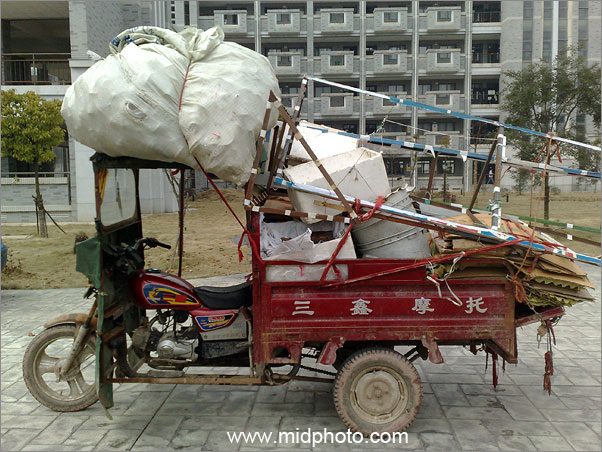
小排量（125cc），大装载 - 能源危机的对应之道
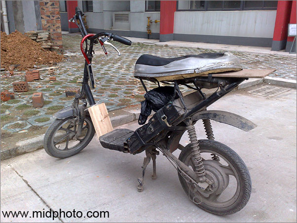
世界能源问题的解决方案之二：电动车。2008年5月我在楼下拍到这辆车，车主是一个水电师傅，此车是他自己做的（电机控制器自己改装），车架在废品店淘的，两块电池，一次充电能跑一百公里。车子只有一个骨架，自重被压缩到最小，电机是500w的，跑起来加速很快，有点贴地飞行的感觉。刹车很不好，需要改进。
虽然发电有污染，但电动车本身是一个纯绿色交通工具，污染排放为零，几乎没有噪音。中国不少大城市在禁止摩托车之后又禁止电动车通行，真是匪夷所思。但这就是中国。我估计电动汽车可以上牌照后电动自行车才可能重新出现在广州的大街上。
纯电动汽车大量上市估计要等汽油价格涨到每升10元或12元以后。本人估计在2012年左右。
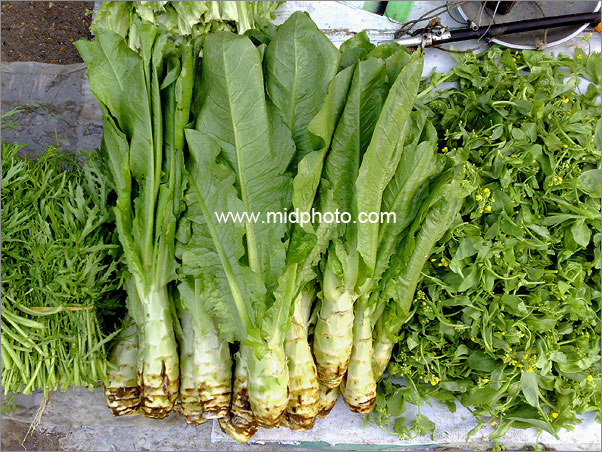
我们赖以生存的植物
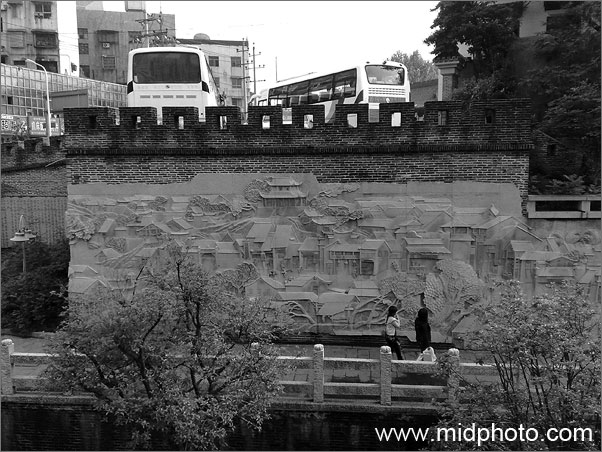
长沙天心阁
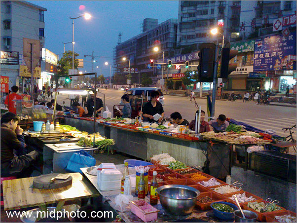
湖南大学学生宿舍门前
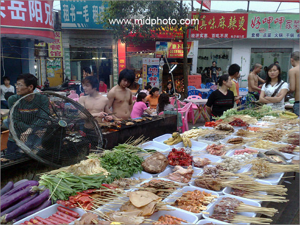
长沙堕落街 - 赤膊美食
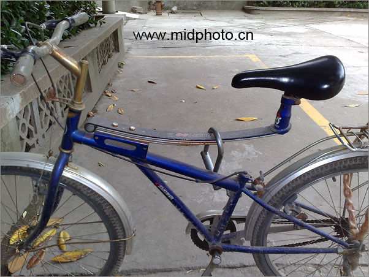
卡车的减震片装在自行车上，很有创意
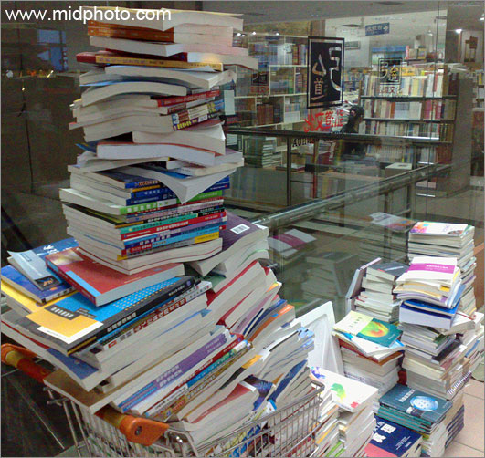
定王台书市
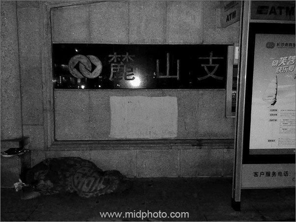
ATM取款机旁边的流浪者。这是2008年5月初，气温并不低，但我发现他在毯子里发抖。我手里正好有打包的饺子，我把饺子饭盒放在他身边，他醒了，说：我吃过了。
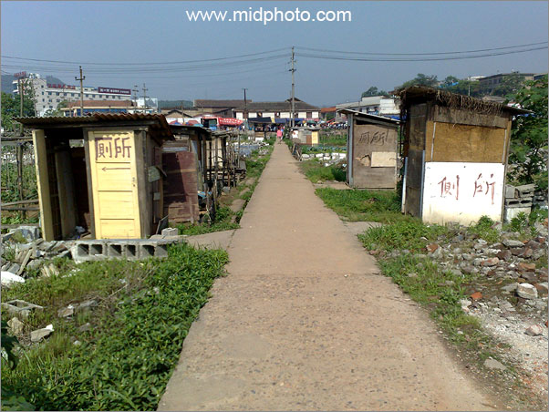
长沙的田野，中南大学附近
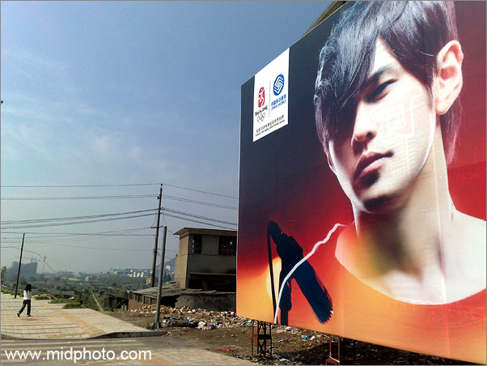
长沙的田野，中南大学附近
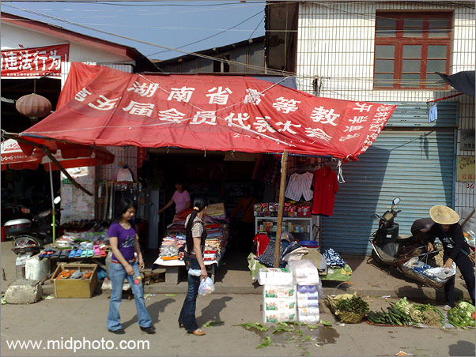
长沙的田野，中南大学附近
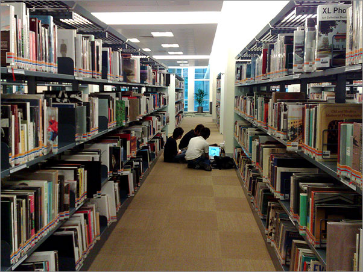
新加坡国家图书馆的这两排书架有超过两千本英文摄影画册。翻看了一下午，觉得和中文画册一样的良莠不齐。自1844年英国人塔尔博特（William
Henry Fox Talbot)在伦敦出版了人类历史上第一本摄影画册《The
Pencil of Nature大自然的笔》以来，世界上出版的摄影画册数以万计，其中垃圾占60%以上，浪费了不少珍贵木材（优质铜版纸）。以后我是否会给这垃圾堆添砖加瓦呢？这是个问题。
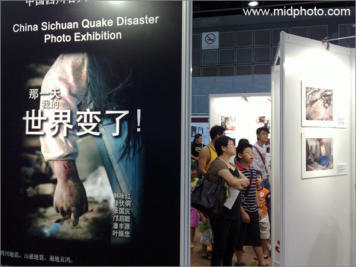
新加坡Suntec
City世界书展中的汶川地震图片展，2008年6月。
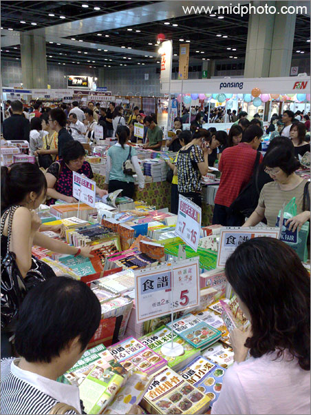
新加坡Suntec
City世界书展，2008年6月。
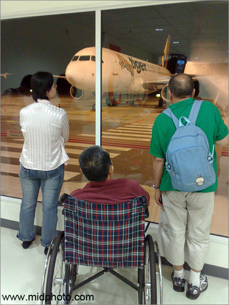
我的父亲在新加坡机场。2008年6月。残疾人坐轮椅如何飞行是个大问题。起飞前7天要电话通知航空公司，因为有些公司规定一架飞机上不能超过两位轮椅乘客。在国内机场我都是提前两个小时到柜台填写轮椅乘客申请表，然后使用机场提供的轮椅，自己的轮椅作为行李托运。新加坡则允许用自己的轮椅推到机舱口，然后交给空姐。
我们乘坐的是廉价航空Tiger
Airways的飞机，需要爬上爬下舷梯。空姐和地勤都非常客气，让我扶着爸爸第一个上飞机。舷梯虽然只有二十多个台阶，但这对我来说是个噩梦，我爸爸需要十分钟才能在我的搀扶下走完。下面一百多位乘客都在舷梯下等着我爸爸，急得我直冒汗。
飞机快降落的时候我爸爸突然说要上厕所，此时厕所是停止使用的。然而我爸爸不听我的劝告开始情绪失控的破口大骂，整个机舱的人都在看着我是否虐待了父亲，我冷汗直下。空姐无奈去请示乘务长，回来说那就破例使用厕所吧，突然我爸爸生气的说：我不去了。
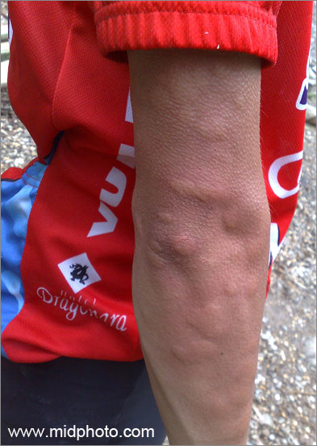
2008年6月6号到8号我和两个朋友骑单车去浏阳大围山，三天往返三百公里。长途骑车我都没问题，但在大围山那位酷爱穿越的朋友带路不慎，我们误入原始森林，被野蚊子围攻一个小时，我们没有任何驱蚊装备，而最大的蚊子比麻将还大，恐怖之极。上图是朋友的手臂，全臂发肿并起鸡皮疙瘩。
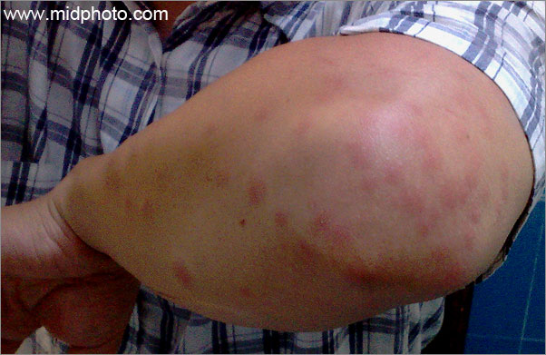
这是第二天早上我的手臂，肘部有几十个包，奇痒三天，恨不得去死，十天后才好。
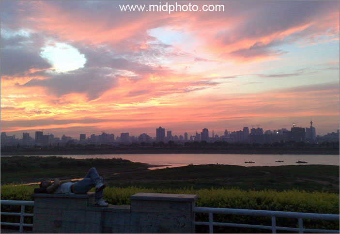
2008年7月6日，湘江的早晨，长沙。晚上停电，热得我实在睡不着，出来江边，看见朝霞。
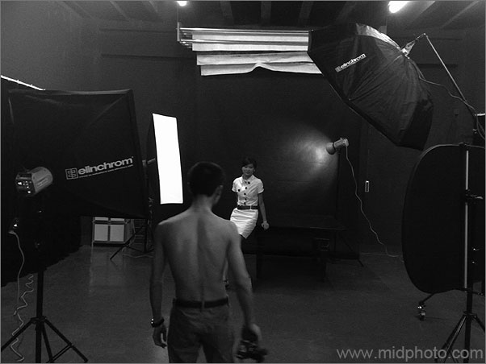
2008年7月9日半夜两点的影棚。有个朋友半夜发疯睡不着，要我来参观他的新棚，此财主果然名不虚传，光一套瑞士爱玲珑ellnchrom的灯就花了人民币十二万。此人煮咖啡的全套装备也比较吓人，先把生咖啡豆烤熟，再打碎，然后用酒精灯加热的原始萃取，一壶咖啡花了四十分钟，等得人口水哗哗，因为满屋奇香。
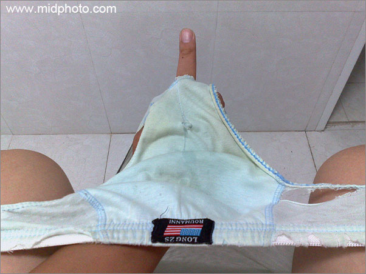
勤俭世家
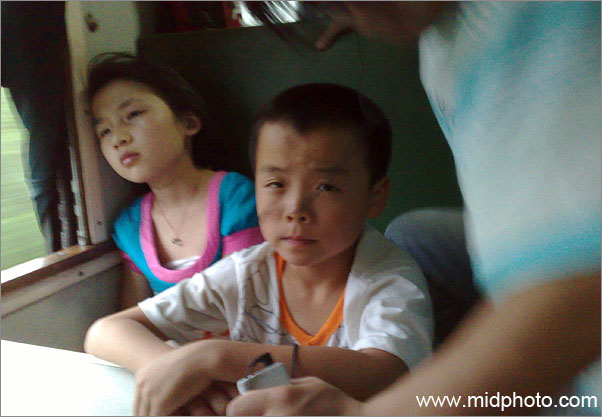
2008年7月9日19点，在火车上9个小时，对面这个小女孩前半程还一直有说有笑吃零食，后半程就靠在窗口默默流眼泪几个小时，而她身边这个小男孩则全程9个小时一言不发。当时我没在意，现在想来突然觉得带着他们俩的那位20来岁的男子是否为人贩子？特发此图。
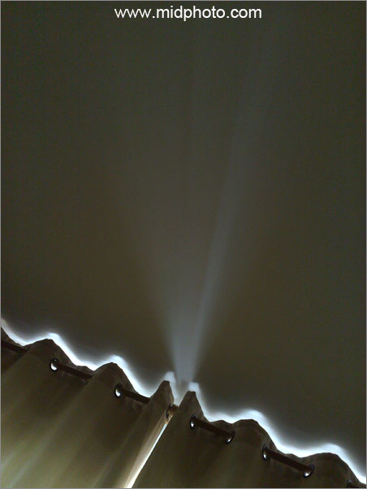
我的新居窗帘
|